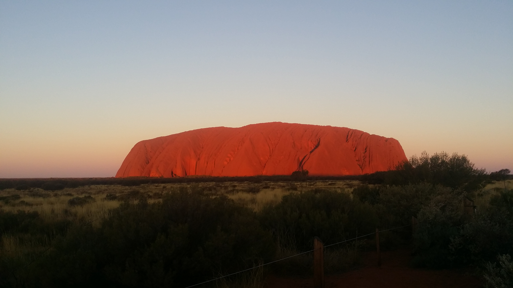
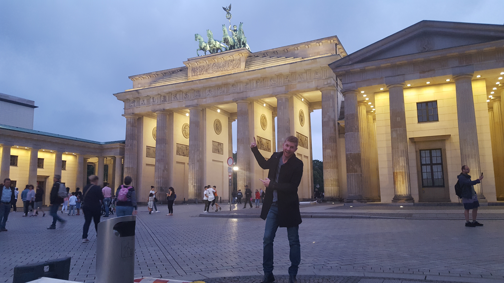

<!--
  Generated template for the LocatePage page.

  See http://ionicframework.com/docs/components/#navigation for more info on
  Ionic pages and navigation.
-->
<ion-header>
    <ion-navbar color="primary">
        <ion-buttons start>
            <button ion-button menuToggle>
            <ion-icon name="menu"></ion-icon>
          </button>
          </ion-buttons>
      <ion-title>
        Locations
      </ion-title>
    </ion-navbar>
  </ion-header>


<ion-content class="card-background-page">

    <ion-card>

        <ion-card-header>
          Locations around the globe
        </ion-card-header>
        <ion-card-content>Here you can find all of our theater locations around the world.</ion-card-content>
      
        
      </ion-card>

    
  
    <ion-card>
      
      <div class="card-title">Australia</div>
      <div class="card-subtitle">64 Theaters</div>
    </ion-card>
  
    <ion-card>
      
      <div class="card-title">Italy</div>
      <div class="card-subtitle">72 Theaters</div>
    </ion-card>
  
    <ion-card>
      
      <div class="card-title">Philippines</div>
      <div class="card-subtitle">28 Theaters</div>
    </ion-card>

    <ion-card>
        
        <div class="card-title">Germany</div>
        <div class="card-subtitle">56 Theaters</div>
      </ion-card>

      <ion-card>
          
          <div class="card-title">Finland</div>
          <div class="card-subtitle">41 Theaters</div>
        </ion-card>
  
  </ion-content>
